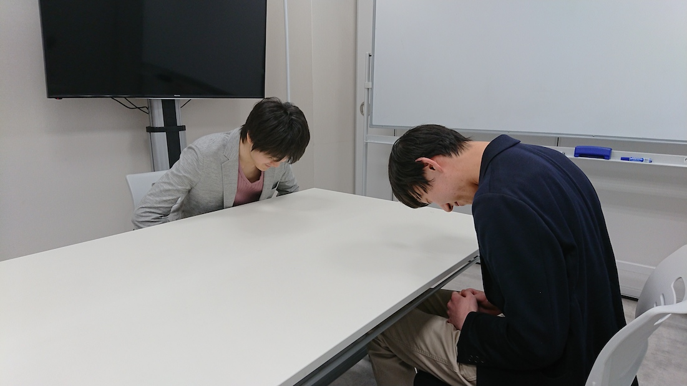
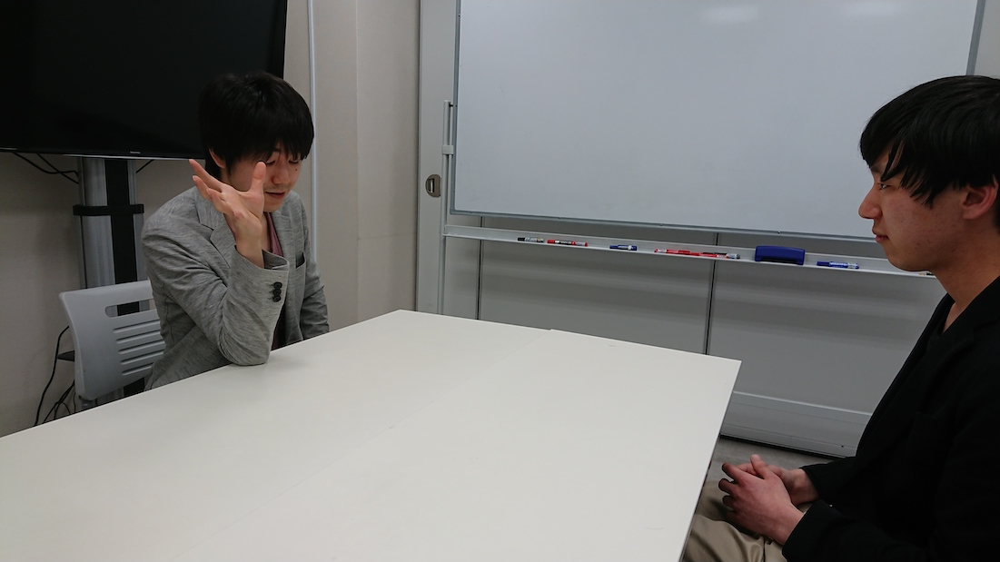
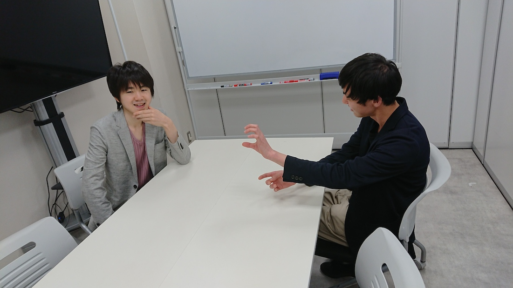

Shota Yamashita
Spring Quota・all round editor
The MNR (Mind Network Revolution) company that will announce new products one after another with state-of-the-art technology and innovative ideas. This time, Hiroki Haraguchi who is the president of such company talked about the background of development of "drone-alexa", the thought of the company, the future prospect.
Mr.Haraguchi, I have been looking forward to talk with you.
 left：Mr.Haraguchi right：Yamashita
Yamashita： First of all, what kind of product is "drone-alexa" developed this time?
Mr. Haraguchi： "Drone-alexa" is an AI assistant that incorporates voice recognition function in the drones. Recently, the AI Assistant is popular. Large companies such as Google and Amazon are doing their best. When I first saw Alexa or Amazon Echo, I felt something wrong. Indeed it was groundbreaking in the sense of liberating from manual work that responds to our voice and remarks, Something was missing in me to call "them" as AI Assistant. And I noticed. "They" did not move . Originally, the word "assist" is rooted in "as" (sist). But they will not move from the spot no matter where I go. Is there such an assistant? No, it is not possible. I wanted to let you know what is a real assistant. It is the birth of a real, "standing by" AI Assistant.
Yamashita： I see. It's a real AI assistant to move! From the thought that this product was made. However, I feel like it seem to be enough to use AI assistant like Siri and Google Home for me. Is there a merit of moving?
Mr. Haraguchi： I understand what you say. Even if it does not bother moving, it means that it can be solved by communication like the existing AI assistant, is not it? Indeed that is more efficient. Everyone like efficient. The result of pursuing efficiency is the present world. As a result, there is a disparity caused by efficiency, only visible ones are given priority. What you can see is easy to understand, and easy to understand is because it leads to an efficiency of understanding. You try to understand things. Because it is because the person who knew gets better efficiency in the future life. Efficiency, efficiency, all efficiency. This seems to be like Christianity or Muslim, believing in efficiency as the sole God .

Mr. Haraguchi： Oops, the talk diverted. I understand that creating new value is the essence of innovation. In other words, we are trying to create value other than the fundamental value of efficiency . Perhaps you guys are getting tired of the day to pursue efficiency. It is already overturning. The times have changed. So, what is the value we create new, is that it is "coexistence". You do not mind taking it differently in various ways.
Yamashita： I'm getting a bit somewhat oblivious... is it new value for "coexistence" for the time being? Originally there is a word coexistence, is not it so much new ...?
Mr. Haraguchi： "Coexistence" which we are saying here is special meaning. The meaning differs from the coexistence that I examine by looking up in a dictionary. For example, speaking of politics, liberalism and socialism are intertwined with each other for a better world. If either is ideal, it is obstructed by either reality. In other words, when ideas of either freedom and society are idealized, we are not aware of the essential flaws in the ideal. That is why I am trying to get moderate but it is a kind of resignation. In that case there will be a plan to request both, It will encounter contradiction unless you notice the ideal flaw. I think that it would be better to do Aufheben.
"Coexistence" means that it exists as it is and that it exists together. Please recognize this as a recognition that it is such a state in the first place, not as an act actively done by yourself. In the first place, we regard society as free and freedom as society. In terms of essence liberalism and socialism are both considered to be concepts. By accepting ideal flaws in each principle and accepting each principle as a coexisting principle, then it is solved logically. But what about practical and concrete solutions, it is not to give up the ideal in either principle. Since they coexist in the first place, there is no act of giving up. In other words, just understand "coexisting" as state.
Yamashita： Uh... what do you mean in short?
Mr. Haraguchi：
(He laughs)
I told various things, the point is to acknowledge the mistakes of words.
Words are definitions (dividing the real world) and it is to make it visible.
We should admit the limit to the invention of this word itself.
First of all, this product was also made because of intention to understand it by coexistence with machines.
Yamashita： Huh? Was not the purpose of making a moving AI assistant?
Mr. Haraguchi： Well that is only a means for the purpose I said earlier. Do not choose a means for the purpose, do you say something like this.
Yamashita： In the meantime, I did not quite understand the parts of liberalism and socialism that I mentioned earlier, Are you acting to rectify with a good idea because the way we think it is wrong?
Mr. Haraguchi： Yes. The value of new "coexistence" begins with the understanding of the limit of what to try to understand with words. It is feeling. In the science there is a study of quantum mechanics, apparently there seems to be a story that quantum is unknown either truth or false unless observing. It can be said that logically true and false coexist. Even from these cases, I feel that various things are getting close to the value of coexistence.
Yamashita： If it is said that it is a story of sensation, the interview will no longer be established. What influence does the value of "coexistence" that Mr. Haraguchi explains to the real society after knowing the limits of words and efficiency?
Mr. Haraguchi： First of all, the liberation from the fence that binds you will begin. Everyone is bound way of thinking by words. By stopping the word and accepting as it is, I think that the world itself will cease to pose problems as a matter of nature. That's right. We accept it. It has changed from active age to acceptance era. It is said that in the spiritual world it is the age of Aquarius. It is an era of liberation, becoming one peer in the network of minds.
Yamashita： I see. Is it the first step of a mind network revolution that MNR leading I realized that it is a recognition that the value of co-existence has begun in many places.
Mr. Haraguchi： I believe that "coexistence" that I advocate transcends the value of "efficiency". Toward of the Mind Network Revolution (MNR) , we need to break through the stiff idea of value once. As I suppose, the concept of "value" will disappear in the mind network age. We unchain from the concept of "value" that binds you, improves the level of consciousness and prepares you for MNR.
Yamashita： MNR, which developed "drone-alexa" as the first step towards the mind network revolution, what kind of efforts will be done in the future?

Mr. Haraguchi： Although it is not a Derrida, I think that we will continue to make products that offer the opportunity to understand essence by pursuing "inefficiency". Speaking of Derrida, what MNR is supposed to do can be said to reflect on the gaze of différance. We recognize the world by gaze, but we reflect on the fact that the action itself is including our own misunderstandings. I'm sorry. You talked about it again. I can not say much about the details of new products so it's a bit more ...
Yamashita： I would like you to tell me a little idiot! Is there a real product etc for the next product as well?
Mr. Haraguchi： There is. Because the future of plans to improve the de-efficiency from the design of things. Design focuses on efficiency, but attacks it from an artistic point of view!
Yamashita： Oh, if it is for de-efficiency, you will do anything. I would like you to do your best and realize the mind network revolution.
Thank you for talking with me today!
 Everyone at MNR
Everyone at MNR